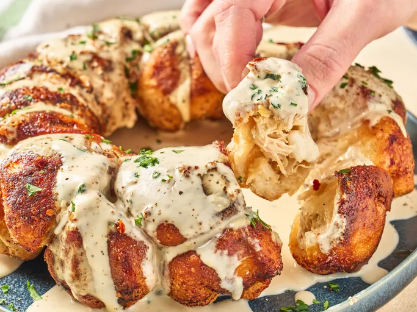

Home
Chicken Alfredo Monkey Bread

Description
This chicken Alfredo monkey bread is a hearty, savory twist on the pull-apart favorite, with chicken, cheese, and Alfredo sauce inside each bite. Topped with more warm Alfredo sauce, it's comforting, rich, tasty, and most of all, fun.
Ingredients
- 1 can refrigerated pizza dough
- 2 cups shredded and chopped cooked chicken
- 2 cups Alfredo sauce
- 2 cups shredded Italian cheese blend
- 4 tablespoons melted butter
- 1 teaspoon Italian seasoning
- 1/2 teaspoon garlic powder
- 1/4 cup grated Parmesan cheese, divided
Directions
-
Preheat the oven to 375 degrees F (190 degrees C). Generously grease a Bundt pan or loaf pan with cooking spray. Roll out pizza dough slightly and cut into 24 squares.
-
Add chicken to a bowl and stir in 1 cup Alfredo sauce.
-
Place about 2 teaspoons chicken mixture and 2 teaspoons cheese in each square. Wrap edges around filling and pinch to seal, then shape them into a ball.
-
Stir together melted butter, Italian seasoning, and garlic powder in a small bowl. Brush the butter mixture evenly over each dough ball.
-
Sprinkle 1 tablespoon Parmesan cheese in the bottom of the prepared pan and top with half the balls. Sprinkle with remaining Parmesan cheese and top with remaining filled dough balls.
-
Bake in the preheated oven until golden brown, about 30 minutes. Let stand in the pan 5 to 10 minutes before carefully loosening bread from the edges and bottom with a small spoon or offset spatula.
-
Meanwhile heat remaining alfredo sauce on the stove or in the microwave. Invert the monkey bread onto a serving platter and top with warm Alfredo sauce.